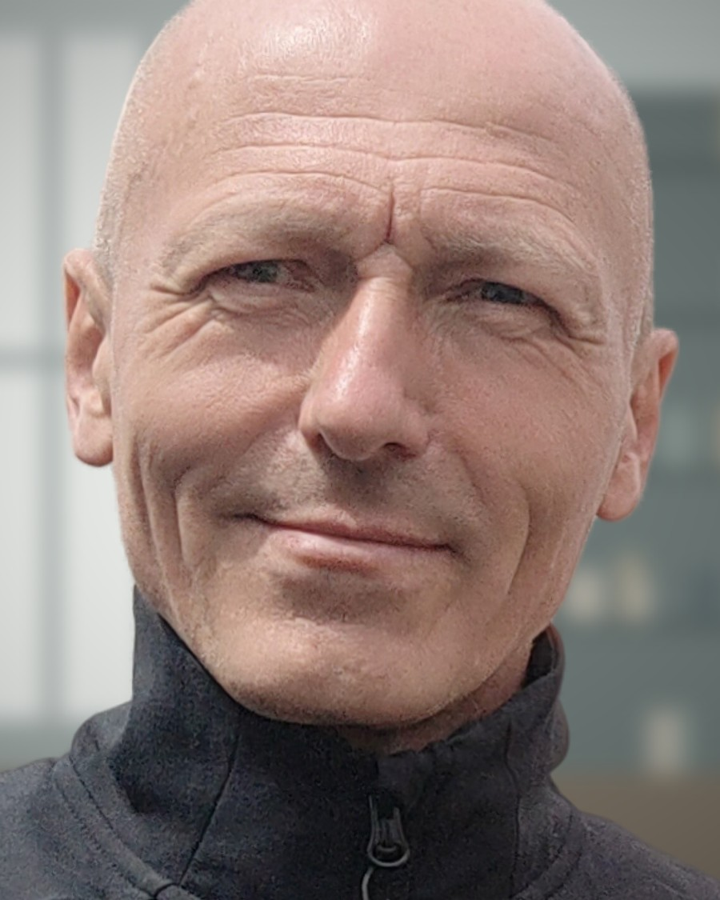

Prostor pro změnu.
Změna – stres, nebo radost? Stres, pokud se jí obáváte. Radost, pokud ji překonáte. Každopádně je to nutnost, dnes více než kdy jindy.
Doprovázím lidi v době, kdy se něco mění nebo je potřeba se v něčem znovu zorientovat – v práci, doma i uvnitř sebe.
Domluvit úvodní rozhovorCo je koučování
Koučování je pro mě rozhovor, ve kterém máte prostor zastavit se, utřídit si myšlenky a najít vlastní odpovědi. Nejsem tu proto, abych za vás rozhodoval, ale abych se ptal, naslouchal a pomáhal vám vidět situaci z více stran.
Doprovázení
Jdu s vámi úsekem cesty, kterým právě procházíte. Nevím lépe než vy, co je pro vás správné. Umím ale být tím, kdo se ptá, naslouchá a pomáhá udržet směr.
Hledání cest
Společně hledáme možnosti, které jste dosud neviděli nebo odmítali. Cílem není jedno správné řešení, ale takové, které je vaše a které dokážete uskutečnit.
Spolupráce
Pracujeme jako partneři. Vy znáte svůj život a situaci, já znám metody a umím je nabídnout. Co vyzkoušíme a v jakém tempu, rozhodujeme společně.
Témata, na kterých spolu můžeme pracovat
Práce se změnou
Nová životní nebo pracovní etapa, rozhodování na křižovatce, hledání dalšího směru.
Obtížné životní situace
Období, kdy je těžké udržet nadhled. Společně hledáme, co je v našich silách, a jaký může být další krok.
Nastavení mysli
Práce s přesvědčeními, vzorci a způsobem, jakým o sobě a o situacích přemýšlíme.
Vztahové rozdíly
Porozumění tomu, proč se v blízkých i pracovních vztazích míjíme, a jak najít společnou řeč.
Komunikace náročných situací
Příprava na obtížné rozhovory, zpětnou vazbu, konflikt nebo nepříjemné rozhodnutí.
Mentoring personální a manažerské práce
Praktická podpora pro manažery a HR profesionály – vedení lidí, rozvoj týmu, nastavování procesů.
Aleš Demjan
Přes dvacet let pracuji v personalistice a v trénincích a rozvoji lidí. Prošel jsem prací v HR managementu, vzděláváním a rozvojem, leadership koučinkem i podporou firem a týmů při zavádění AI do každodenní práce.
Technický základ mám z VUT a na začátku kariéry jsem se věnoval programování. Dodnes mi pomáhá přemýšlet o věcech strukturovaně – a zároveň vím, že nejdůležitější jsou lidé a ne systémy.

Jak to probíhá
Úvodní rozhovor
Krátké nezávazné setkání, na kterém se poznáme a zjistíme, jestli si sedíme.
Dohoda na cíli
Společně si ujasníme, co chcete změnit nebo řešit a jak poznáte, že se to daří.
Společná práce
Pravidelná setkání v dohodnutém rytmu, osobně nebo online.
Zhodnocení
Ohlédnutí za tím, co se podařilo, a rozhodnutí, jestli pokračovat, nebo spolupráci uzavřít.
Z čeho vycházím
Při práci s lidmi čerpám z několika přístupů. Žádný z nich nepovažuji za jediný správný, každý pomáhá v jiné situaci.
- Business kouč – výcvik, Qed & Quod, s.r.o. (Radvan Bahbouch)
- Systemický kouč – výcvik, JASEKA (Petr Parma)
- Soulwork coaching – Martyn Carruthers
- Mediace – výcvik, Asociace mediátorů
- NLP – IWAISA
Pojďme si promluvit
První rozhovor je nezávazný. Napište mi nebo zavolejte a domluvíme se na tom, jak dál.